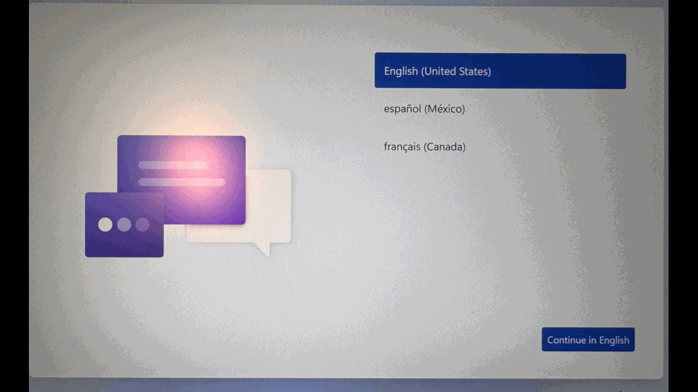
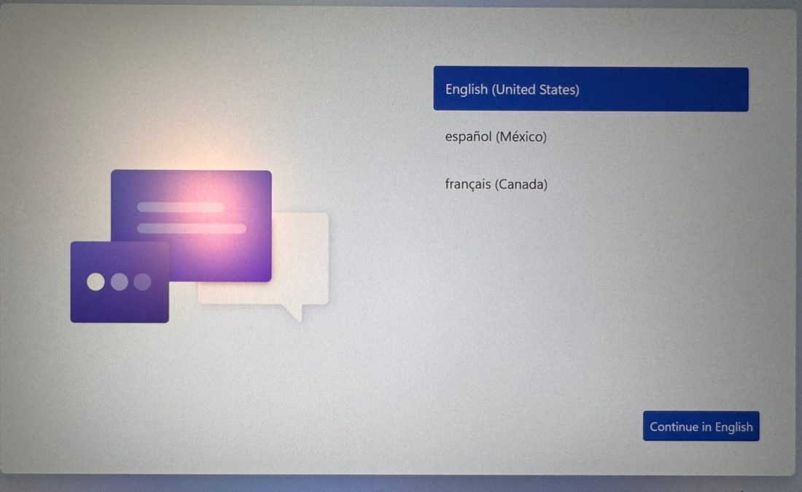
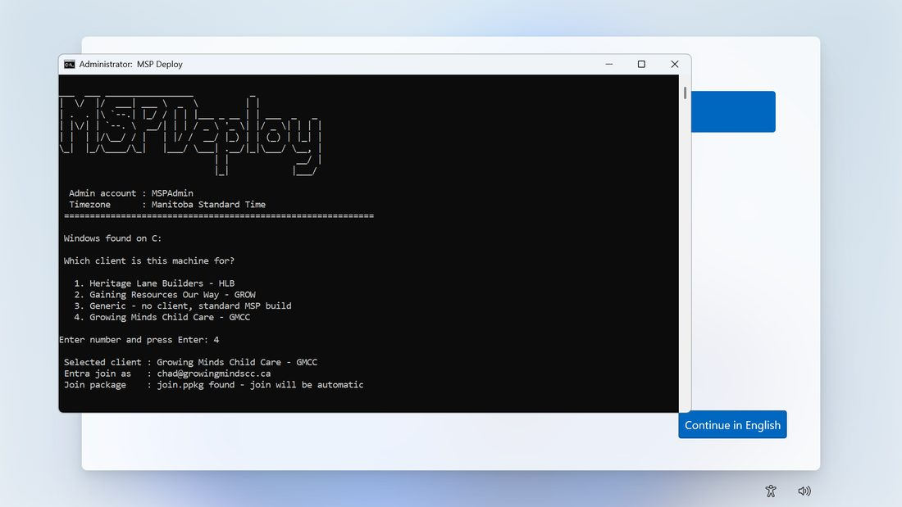
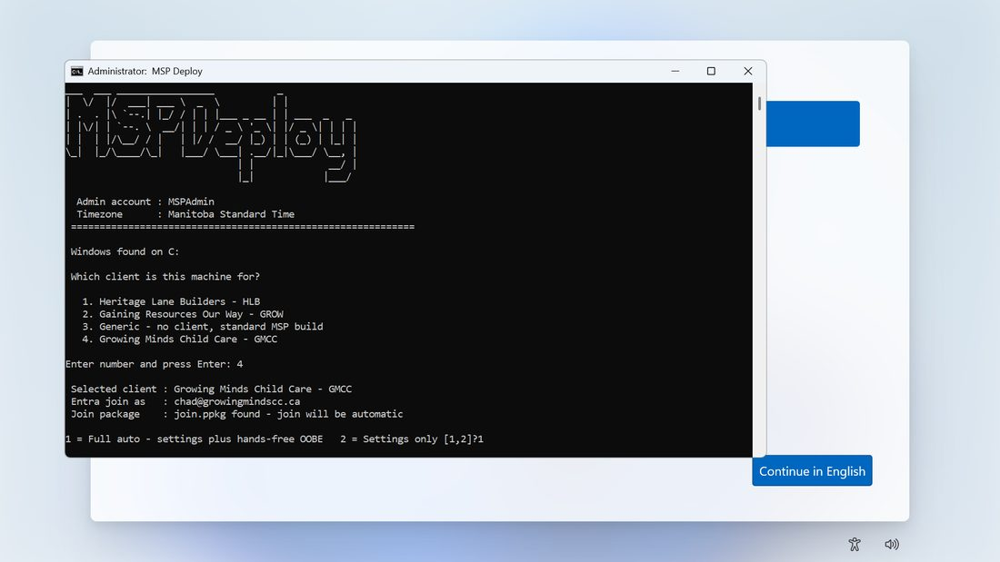
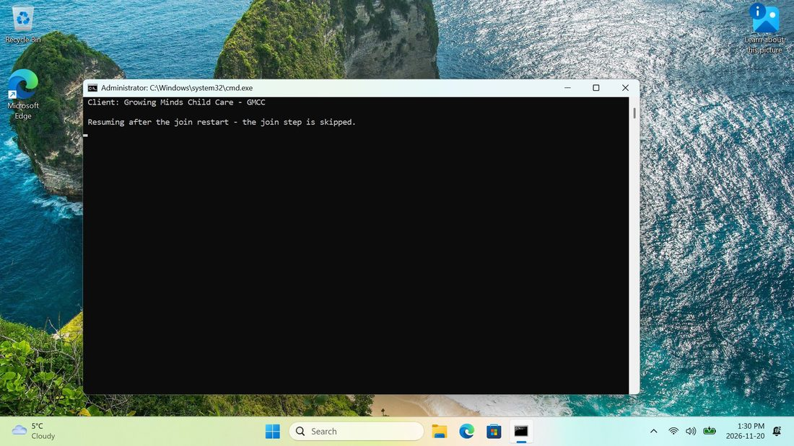
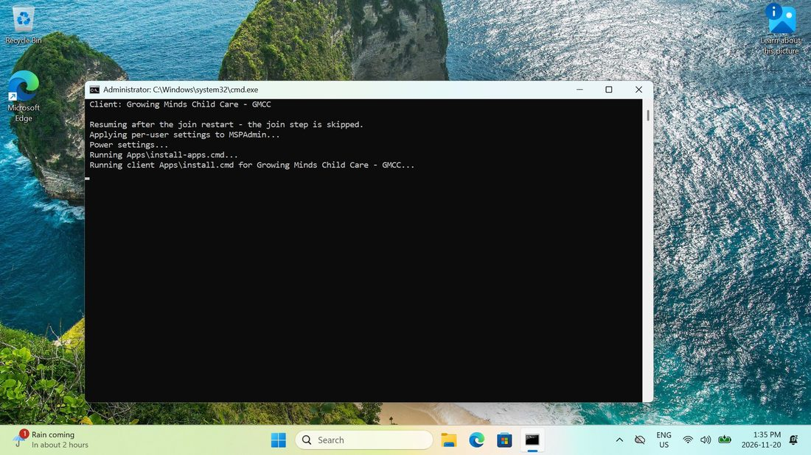
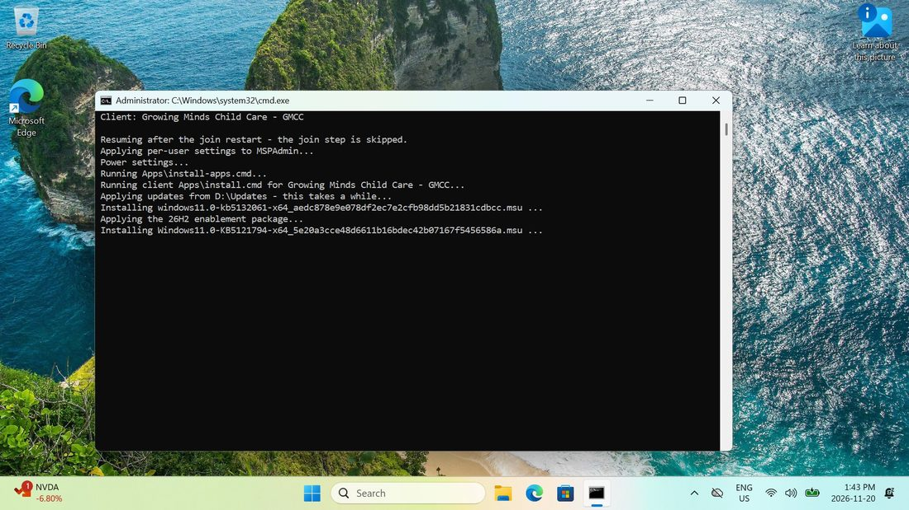

___ ___ _________________ _
| \/ |/ ___| ___ \ _ \ | |
| . . |\ `--.| |_/ / | | |___ _ __ | | ___ _ _
| |\/| | `--. \ __/| | | / _ \ '_ \| |/ _ \| | | |
| | | |/\__/ / | | |/ / __/ |_) | | (_) | |_| |
\_| |_/\____/\_| |___/ \___| .__/|_|\___/ \__, |
| | __/ |
|_| |___/
Turn a brand-new or freshly reset Windows 11 laptop at the setup screen into a configured, Entra-joined machine for a specific client. Pick the client, pick Full Auto, walk away.

One real deployment, start to finish.
One USB stick serves every client. The menu is built from the folders on the stick - add a client by copying a folder, no script edits.
Full Auto stages the kit, reboots, and the Windows setup answers itself: screens skipped, your MSP admin account created, region and timezone set.
Each client gets a provisioning package with a bulk enrollment token - the supported way to join silently. No passwords are stored, and the staged copy on the machine deletes itself.
Drop a model's driver packages in the stick's Drivers folder and they are installed before the join, so the network is up when it matters.
The latest cumulative update and the 26H2 enablement package install from the stick, then a Windows Update pass runs. A finisher keeps re-checking at each sign-in until the machine is fully current.
Silent OneDrive sign-in, Files On-Demand, per-client SharePoint libraries auto-synced, and Known Folder Move for Desktop, Documents and Pictures.
Power on the new or freshly reset laptop. At the first setup screen press Shift+F10 for a command prompt, switch to the USB stick, and run setup.cmd.

The menu lists every client folder on the stick. Pick one and the kit confirms the join account and that the client's join package is on board.

Mode 1 applies the settings, stages the kit on the machine, and reboots into a hands-free OOBE. (Mode 2, Settings Only, skips the staged OOBE for machines you would rather click through yourself.)

At first sign-in the finishing script installs drivers and applies the client's Entra join package, then restarts to complete the join. Sign back in and it picks up exactly where it left off.

Per-user settings, power settings, generic apps, and the client's own agent installer from its folder on the stick.

The stick's cumulative update and the 26H2 enablement package go on first, then a Windows Update pass catches whatever is left. The timezone is set, the update finisher is registered, and the staged kit cleans itself up.

The full run is logged to C:\MSPDeploy\deploy-<computername>.log - one log per machine, named for the machine. The longer cut of this run is in the full walkthrough GIF.
join.ppkg) per client, made once in the free Windows Configuration Designer. Bulk tokens expire - up to about 180 days - so regenerate each client's package before it lapses; the kit falls back to a guided manual join if one is missing.config.cmd before first use - the placeholder is public, and the stick should be treated like a credential.